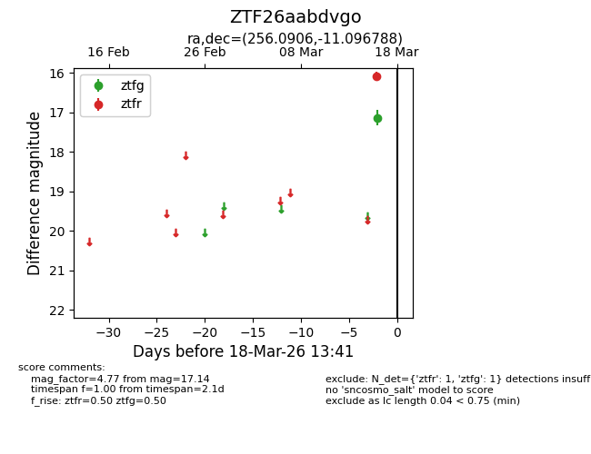
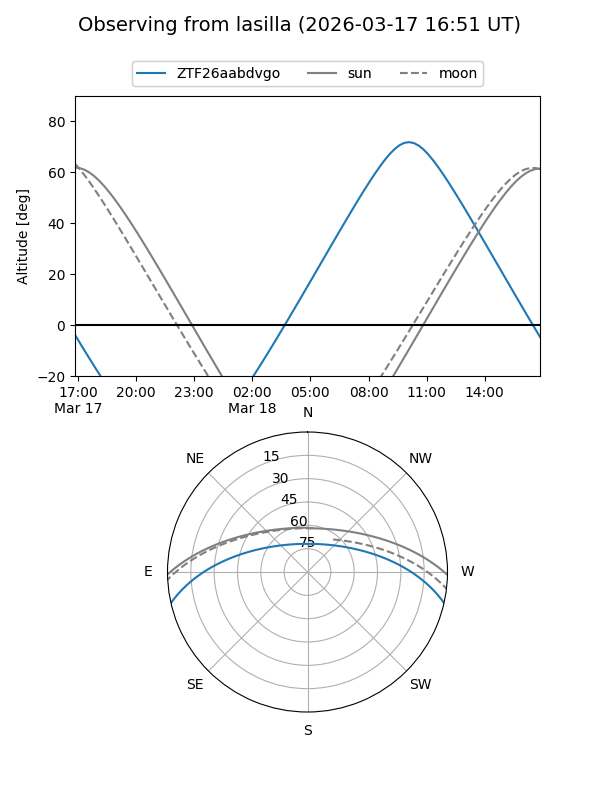
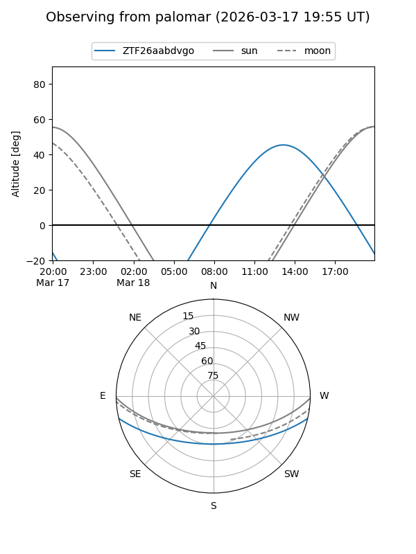
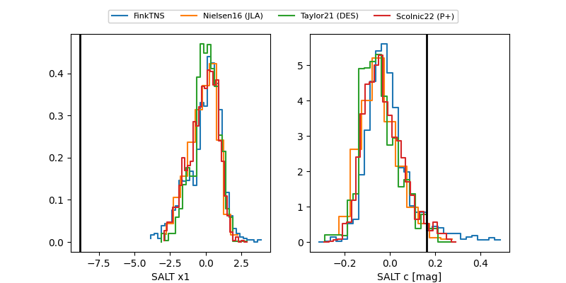

ZTF26aabdvgo
Target ZTF26aabdvgo at 2026-03-18 13:43
Aliases and brokers:
FINK: link
Lasair: link
ALeRCE: link
alt names
ZTF26aabdvgo (ztf,fink_ztf)
Coordinates:
equatorial (ra, dec) = 256.0906,-11.09679
equatorial (HMS+DMS) = 17:04:21.74,-11:05:48.44
galactic (l, b) = (9.8806,+17.79354)
Flags:
Photometry:
last ztfg=17.14, ztfr=16.08
1 ztfg, 1 ztfr detections
Lightcurve

Visibility


Additional plots
